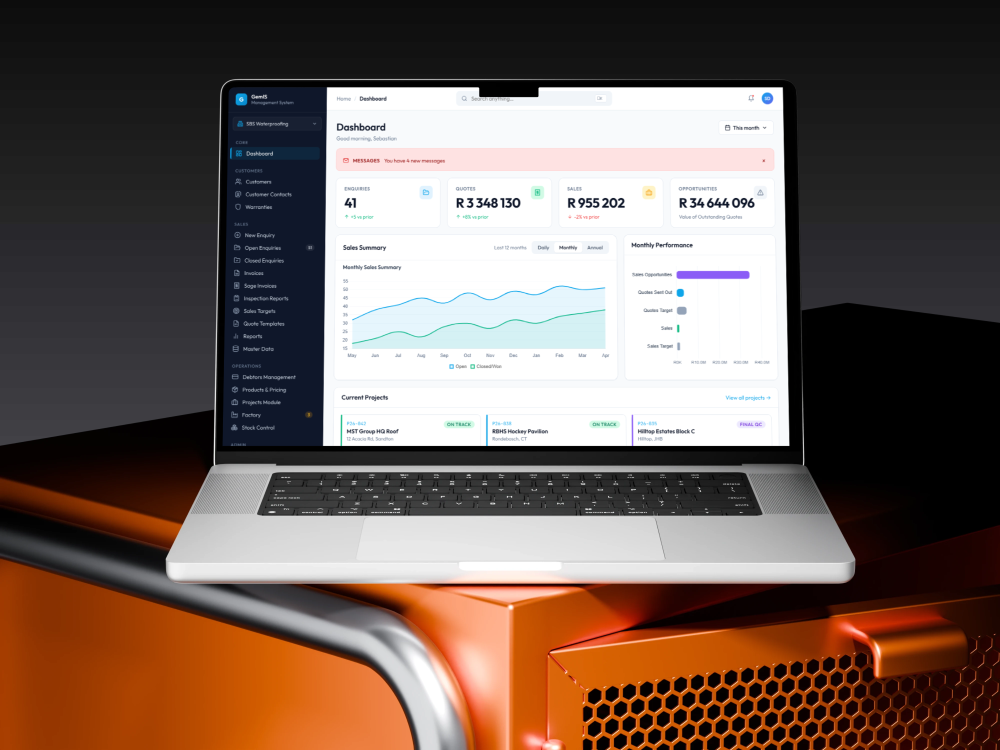
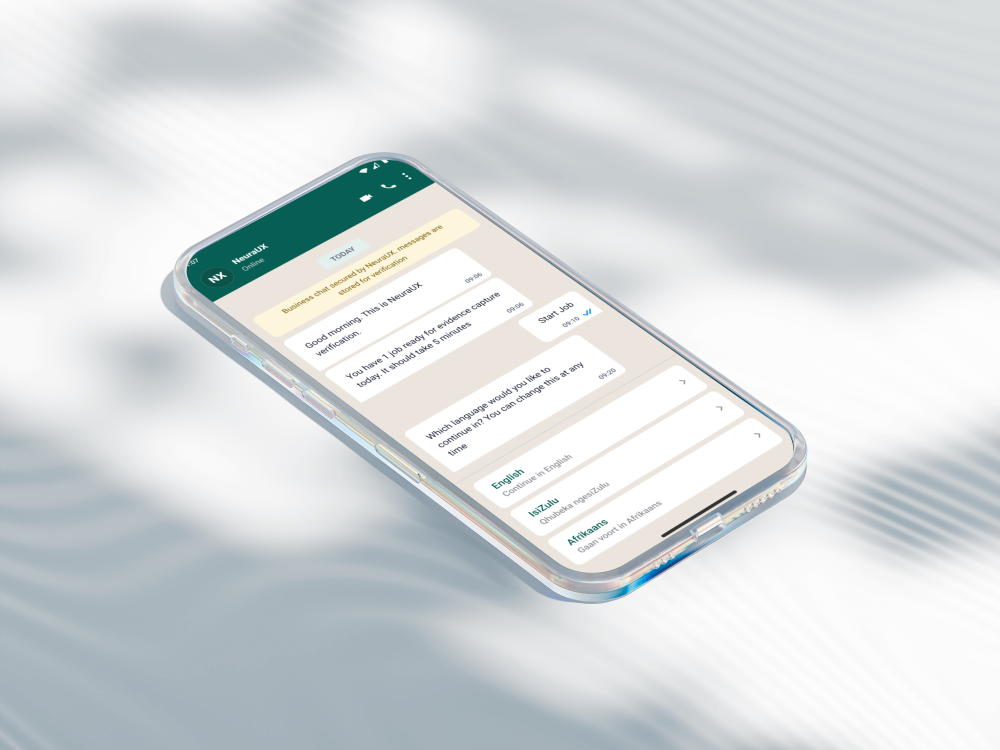

Understand
How the business operates, where users struggle, and which decisions matter most.
Product Designer & AI Experience Designer
Brands & Projects
01 — Design Philosophy
Good design isn't the interface — it's everything that has to be true for the interface to work.
Before I draw a screen, I want to understand the decision points, the failure states, and the constraints the business is actually operating under — whether that's a WiFi dashboard, a fintech onboarding flow, or a WhatsApp-based verification system. The medium changes. The discipline doesn't.
Context beats convention. I design for the South African reality — multilingual, low-bandwidth, income-irregular — instead of importing frameworks built for someone else's market.
Trust is a design material. Consent, data handling, and compliance aren't legal afterthoughts — POPIA and governance thinking get designed in from the first flow, not bolted on before launch.
Unhappy paths are the real design work. Rejection loops, edge cases, admin overrides — if a system only works in the happy-path demo, it isn't finished.
Depth over breadth-for-its-own-sake. Whether it's a service blueprint, a design system, or a conversational AI flow, I'd rather take one problem all the way to governance-grade than ship ten shallow screens.
02 — Selected Work
Every project begins with a business challenge — not a screen.

Enterprise SaaS · Design Systems
Redesigning an enterprise property-management platform for speed, scalability and operational efficiency.
View case study →
AI UX · Explainable AI · Trust Design
An AI-assisted WhatsApp verification experience that helps field technicians submit compliant evidence correctly the first time.
View case study →
Operational Systems · Mobile UX
Improving field operations through a driver-first mobile experience that reduces friction in real-world waste-collection workflows.
View case study →03 — The Problems I Solve
I help organisations solve challenges such as:
Designing confidence, transparency and human oversight into AI-powered experiences.
Transforming fragmented enterprise processes into intuitive user journeys.
Helping users complete critical tasks with confidence — even in high-pressure environments.
Creating reusable foundations that enable product teams to move faster while maintaining consistency.
Turning stakeholder complexity into products that achieve measurable outcomes.
04 — Expertise
Designing intuitive digital products from concept to launch.
I design enterprise software, SaaS platforms, dashboards, mobile applications, and customer-facing products that simplify complex workflows while supporting business goals.
Improving complex systems used by teams every day.
I redesign internal tools and operational platforms to reduce friction, improve productivity, and create experiences that scale across large organizations.
Designing AI experiences people can understand and trust.
I create AI-powered products that prioritize transparency, confidence, and human oversight — whether through conversational interfaces, AI-assisted workflows, or intelligent automation.
Creating scalable design foundations for growing products.
I build reusable design systems that help teams design and develop faster while maintaining consistency across products.
05 — How I Work
My process changes with the product, but the principles stay consistent. I begin by understanding how the business operates, where users struggle, and which decisions have the greatest impact. From there I map workflows, identify friction, explore multiple directions, prototype rapidly, and validate with stakeholders before refining the experience into scalable design systems — treating design as a continuous process of reducing uncertainty, not a sequence of deliverables.
How the business operates, where users struggle, and which decisions matter most.
Workflows and friction points, then multiple solution directions — not just one.
Rapid, interactive prototypes tested with stakeholders before development begins.
Refining the experience into scalable, reusable design systems.
06 — About
I'm a Product Designer based in South Africa, specialising in enterprise software, AI-powered products and operational systems.
Much of my work focuses on environments where technology meets real-world constraints — field technicians working with limited connectivity, multilingual users interacting through WhatsApp, and enterprise teams managing complex operational workflows. Those experiences have shaped how I approach design.
I believe great products don't earn trust through polished interfaces alone. They earn trust by making complex systems feel understandable, predictable and accountable. That's the kind of work I enjoy building.
Download Profile